Fast, natural ink
Low-latency pen with pressure, marker with a chisel tip, highlighter, and ink that fades by itself.
Free and open source · Android app
Presenter Cockpit is a free, open source app for Android tablets with a pen. It shows your PDF slides on the projector and lets you draw, point and explain. The audience sees the slide, your ink and the laser. You also see your tools, your notes and your code.
A person's needs and ideas, turned into code with the help of AI.
How it works
Your tablet becomes the cockpit. The projector, or any external screen, shows only what the audience needs.
HDMI, USB-C, a wireless display, or a window to share in a video call. You can use more than one at a time.
From the tablet, a folder or a server. If there is a .pdfpc file next to it, your notes are there too.
Write, point, pause, freeze. The audience follows every stroke live, on every screen.
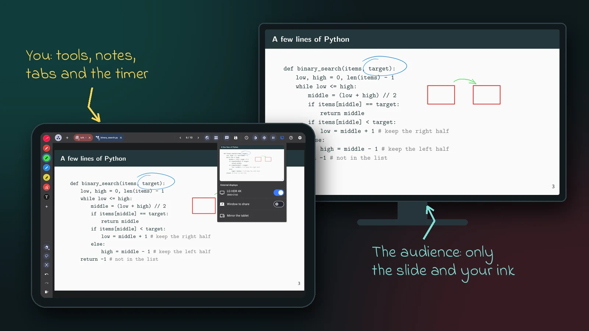
Features
Low-latency pen with pressure, marker with a chisel tip, highlighter, and ink that fades by itself.
A bright dot with a short tail, or a trail that stays for a moment. It appears as soon as the pen comes close.
Draw by hand and get a clean line, arrow, rectangle or ellipse. Add text boxes, also in a handwritten font.
Reads and edits PDFPC notes, with Markdown. Only you see them, in a panel you can move and make transparent.
Overlays are grouped into slides: swipe to the next slide, tap to show the next step.
Projector, monitor, wireless display and a window for video calls, all showing the same thing.
Freeze what the audience sees while you look for a page. Pause with a calm screen. Start privately.
Dim everything but one area of the slide. Invert colors for dark rooms, keeping red red.
Open a code editor or a terminal, on the tablet or on a server over SSH, and show it larger to the audience.
Links in your PDF open in a tab. The audience sees the same page, at the same position. PDFs you download open as slides.
See all slides at once, move, hide or delete them, or add a blank page. Start a whiteboard for a quick sketch.
Save a set of PDFs, code and terminals for each talk, and open it again in one tap. Recent PDFs wait on the start screen.
Find a word in the PDF, follow its links and its outline, bookmark slides and jump back where you were.
Set when the talk ends, or run a stopwatch. The time left turns yellow, orange, then red.
Presentation remotes and keyboard shortcuts work as in PDFPC. Press ? to see them all.
Annotations are standard PDF annotations: other apps show them, Presenter Cockpit can still edit them.
Highlights
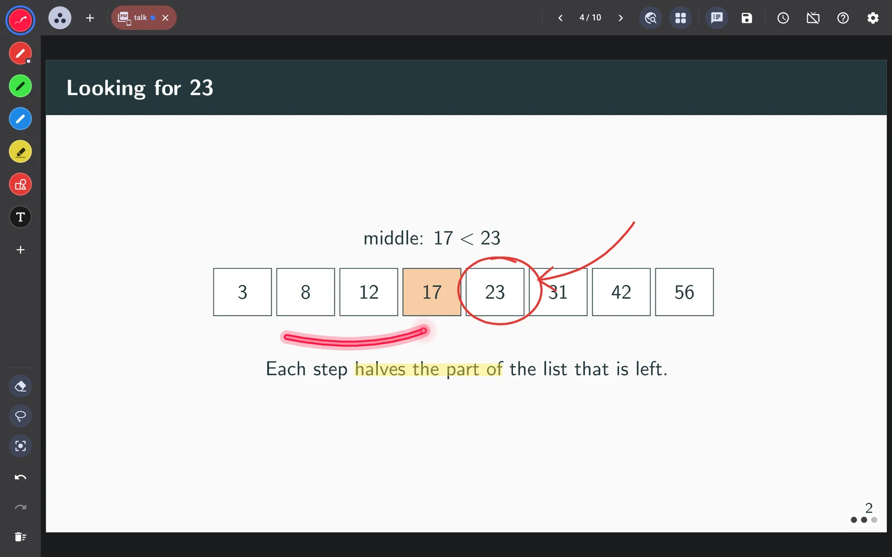
The stroke is drawn with very low latency and follows the pressure of the pen. Every tool keeps its own color and size, and the button of the pen switches to a second tool you choose.
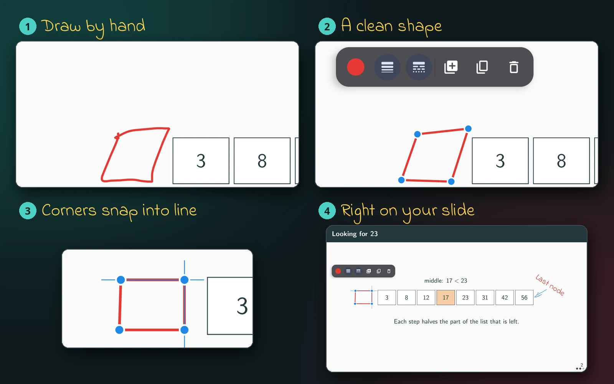
Draw a rough line, arrow, rectangle or ellipse: it becomes a clean shape. Drag its corners and they snap to the other shapes, so lines become parallel, corners line up and sizes match.
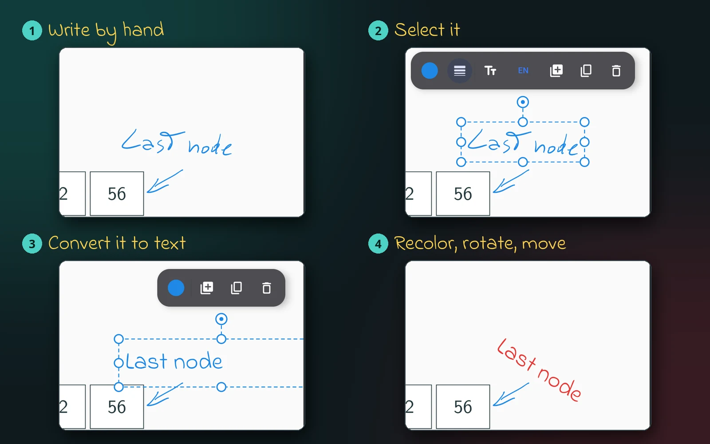
Select what you wrote, even several lines, and turn it into a text box in the same place, color and slant. It keeps a handwritten look, and you can move, rotate and recolor it like any other note.
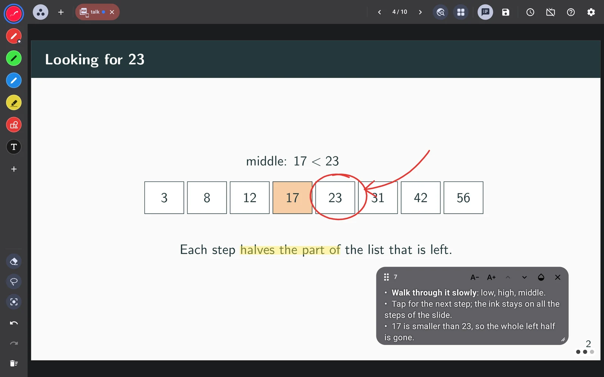
Presenter Cockpit understands Beamer overlays and reads the notes written for PDFPC. Small dots show how many steps of the slide are left.
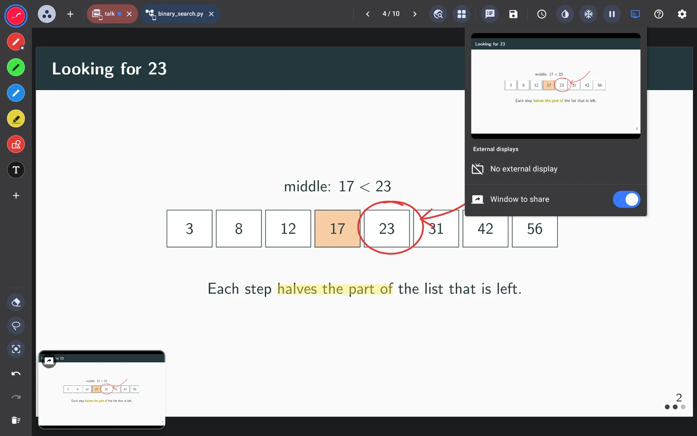
Tools, tabs and notes stay on the tablet. A small live preview, which you can move anywhere, shows what the audience is seeing right now.
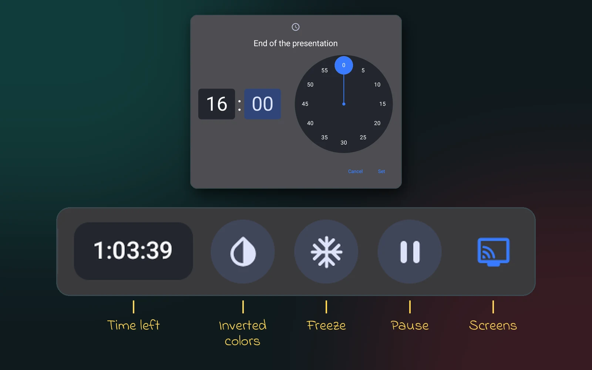
The controls you need while you talk are always at the top, one tap away or on your remote. Set when the talk ends: the time left is always in view, and turns yellow, orange, then red, also around the slide on the tablet. While a screen is connected, notifications stay quiet.
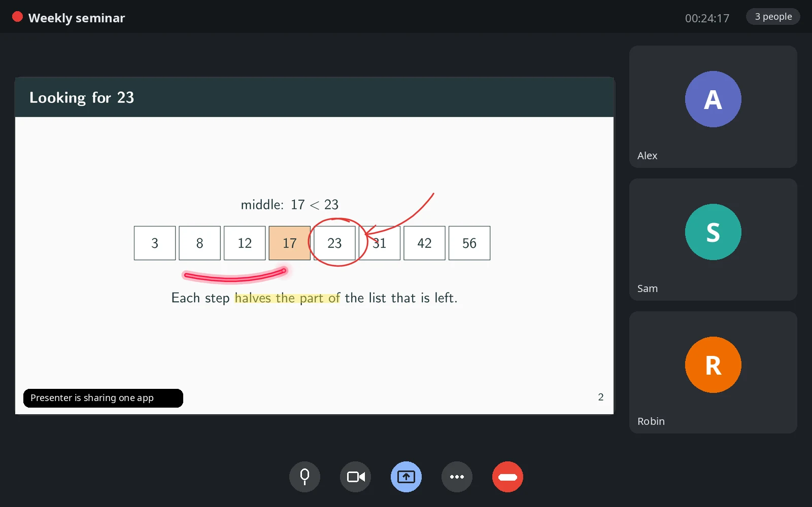
Open the window to share and pick it as “one app” in your video call. Remote participants see the slides and your ink, while you keep using the tablet as usual.
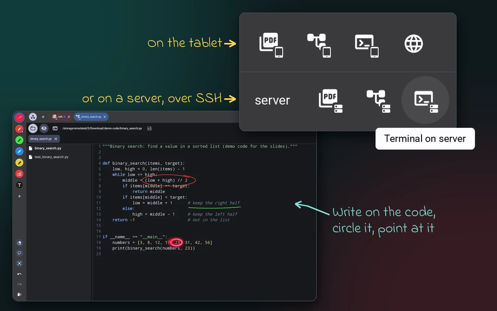
Open a PDF, a folder of code or a terminal, on the tablet or on your server over SSH. The audience sees the same lines, larger. Point at them with the laser or circle them with the pen.
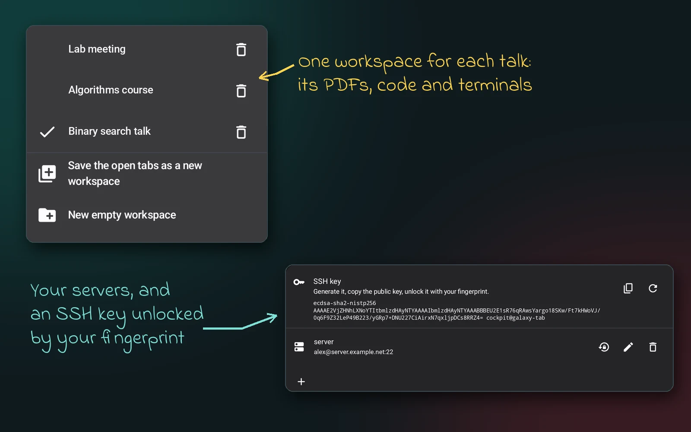
Save the tabs of each talk as a workspace: its PDFs, code and terminals. Add your servers once: the app makes its own SSH key and keeps it in the tablet's secure storage.
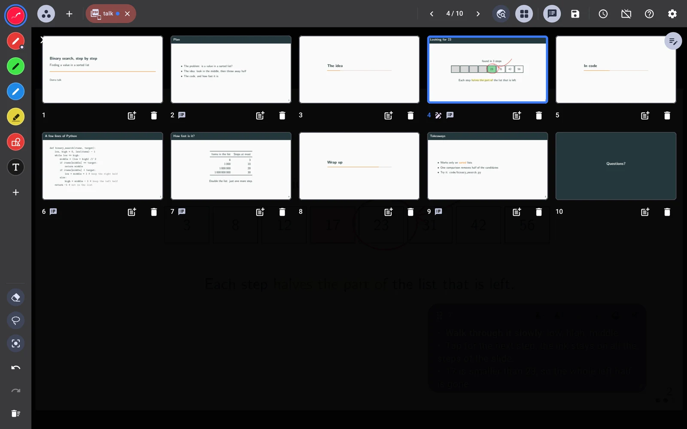
See every slide at once and jump to the one you need. Change the order of the pages, hide or delete one, or add a blank page: your ink and notes move with them. Or start a whiteboard of blank pages.
Gestures
No menus while you talk: the most common actions are one gesture away.
Scribble over ink: it is erased.
Circle and hold: what is inside is selected.
Hold the pen button: use your second tool.
Draw a shape: it becomes clean and you can edit its corners.
Swipe: next slide. Tap: next step.
Tap with two fingers: undo. Three: redo.
Handwriting to text: select your writing and convert it.*
Hold a finger on an item: select and move it.
* Not in the F-Droid version: the recognizer comes from Google and is not free software.
Download
Three versions of the same app. They can live side by side on the same tablet. Android 10 or later.
Every feature, with access to all your files. Install the APK by hand, or build it from the source.
.apk file from the latest release.Or let an app keep it up to date: add this project to Obtainium or Komi Store. They watch the releases on GitHub and tell you when a new version is out.
Works on the folders you choose, as Google Play requires, and updates by itself. No terminal on the tablet.
Only free software, so no handwriting to text. Access to all your files, and updates by itself.
| GitHub | Google Play | F-Droid | |
|---|---|---|---|
| Ink, laser, notes, screens | ✓ | ✓ | ✓ |
| Code and SSH terminal | ✓ | ✓ | ✓ |
| Terminal on the tablet | ✓ | – | ✓ |
| Files | All files | Folders you choose | All files |
| Handwriting to text | ✓ | ✓ | – |
| Only free software | – | – | ✓ |
| Updates | By hand, or with Obtainium or Komi Store | Google Play | F-Droid |
A short Beamer talk with overlays, presenter notes and some code to open in a code tab.
Free software
Presenter Cockpit is free software, released under the GNU General Public License, version 3. Read the code, change it, share it. Nobody can turn it into a closed app: every version must keep its source open.
Your files stay yours. No account and no cloud: your PDFs stay where they are, with your ink saved inside them. Your session comes back as you left it, even if Android closes the app.
It is built on great open source projects: Jetpack Ink for the pen, PdfBox-Android for the annotations, JSch and termlib for SSH and the terminal.
Written with AI. The code is written with AI, starting from the needs and the ideas of the author.
Android 10 or later. A tablet with an active pen, like the S Pen, gives the best result. It is developed and tested on a Samsung Galaxy Tab S9+.
No. Notes, tools, tabs and menus are only on the tablet. The audience sees the slide, your ink and the laser.
Inside the PDF, as standard annotations. Other PDF readers show them, and Presenter Cockpit can still edit them.
No. You need it only for SSH, web pages, and the first download of the handwriting model.
Yes. Open the window to share from the screens menu and share it as “one app”.